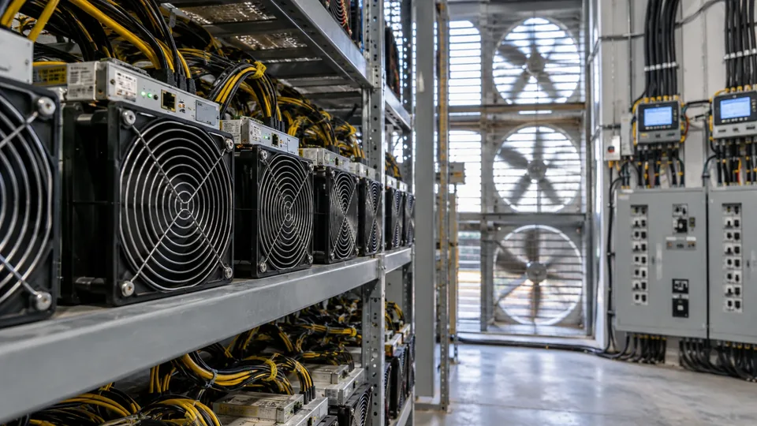

A Bitcoin Miner Sells Computing Work Against a Volatile Reward
Power, equipment efficiency and network competition shape mining returns. Production volume alone cannot establish profitability.

Bitcoin mining combines a probabilistic revenue stream with hardware and operating costs. A miner contributes computing work in the competition to produce valid blocks. Successful block production can generate a protocol-defined subsidy and transaction fees, while the miner pays for electricity, equipment and the infrastructure needed to keep it running.
Profitability therefore depends on more than Bitcoin's price. The miner's share of computing power, network competition, fees, power terms and equipment efficiency all matter. A higher token price can improve revenue while rising competition or costs absorbs much of the benefit.
What produces the revenue
The block reward consists of a subsidy and fees from transactions included in the block. The subsidy follows the protocol's issuance schedule and declines at scheduled halving points. Transaction fees vary with the transactions included and the demand for block space; they are not a fixed supplement guaranteed at every block.
The Bitcoin developer documentation distinguishes solo mining from pooled mining. A solo miner receives infrequent, uncertain block outcomes relative to its computing share. A pool combines work and distributes proceeds under its own payment rules, generally reducing the variability experienced by individual participants while adding pool-specific fees and terms.
Expected revenue is not the same as guaranteed daily revenue. A business may estimate proceeds from its computing share and network conditions, but actual outcomes depend on the payment method, uptime and the randomness of block discovery. The distinction matters when regular power bills must be paid from variable receipts.
Computing power is valuable relative to the competition
An operator's hardware produces hashes at a given rate. Its expected share of block production depends on that contribution relative to the network, not only on its own absolute machine count. Network difficulty adjusts under the protocol's rules as conditions change.
For a simplified hypothetical comparison, keep the miner's computing contribution and total reward pool unchanged while competing network power increases enough to raise the network total by 25%. The miner's share becomes one divided by 1.25, or 80% of its earlier share. Expected proceeds fall by 20% under those assumptions.
The example does not forecast network growth or precisely model the timing of difficulty adjustments. It shows why owning the same equipment can produce a different expected revenue stream later. A profitability estimate made at one level of competition is not a permanent characteristic of the machine.
Electricity costs need a complete operating assumption
Imagine a hypothetical installation drawing a constant 100 kilowatts for 24 hours. It consumes 2,400 kilowatt-hours. At $0.06 per kilowatt-hour, daily electricity costs are $144. If daily mining revenue is assumed to be $220, the difference is $76 before other costs.
Neither the power price nor revenue is a current market quotation. The calculation also assumes the stated power draw includes the equipment being evaluated and that the installation runs continuously. Cooling, networking or other site loads omitted from that draw would raise the total power bill.
If Bitcoin's dollar price falls 20% while the amount of Bitcoin earned remains unchanged, the assumed revenue falls to $176. With electricity still costing $144, only $32 remains before other expenses. A 20% revenue decline has reduced this narrow operating surplus by substantially more than 20% because the power cost did not fall with it.
The power margin is not the business's profit
Hardware must be acquired and eventually replaced. Repair, staffing, hosting, insurance, financing and pool charges can affect the remaining cash. Accounting depreciation and actual replacement expenditure are different measurements, both relevant to assessing the business over an equipment cycle.
Continuing the first hypothetical case, a 2% charge on $220 of revenue is $4.40. If other daily cash costs are $10, the $76 power-only surplus becomes $61.60 before hardware investment, financing, tax and additional obligations. Describing the original $76 as net profit would omit those items.
A machine can remain cash-positive on electricity while failing to recover its purchase price over its useful life. Conversely, equipment already owned may be operated while its incremental receipts exceed avoidable costs. Those are different decisions, and a single “break-even Bitcoin price” can conceal which one is being analyzed.
Price exposure continues after the coins are mined
Operators that retain Bitcoin rather than sell it immediately keep exposure to the token's subsequent price. Changes in the value of those holdings should be distinguished from the economics of producing the coins. Financing secured against assets can add another source of liquidity pressure.
Read reported mining revenue alongside computing capacity, uptime, energy use, realized power costs and capital spending. The explanation of free cash flow helps distinguish operating receipts from cash left after investment. A credible mining assessment connects those measures instead of treating a rising Bitcoin price as sufficient evidence of a profitable operation.
Sources and methodology (3)
Primary references for definitions and methodology. All numerical teaching examples in this article are hypothetical and are not current prices, forecasts or actual company results.
TTN analysis for informational purposes. This article is not investment, tax or legal advice.